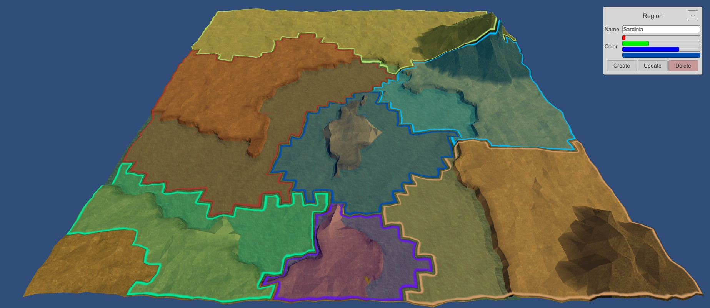

| Client | iTGrow |
| Platforms | Mobile & Desktop |
| Tecnologies | AngularJS Node.js Mongo Express MongoDB Ionic HTML/CSS |
| Summary | This project was created within the course of "Laboratory for Project Management". It consisted in a platform to manage birthdays notifications and reminders, implemented through a hybrid interface (desktop/mobile) - with the help of the Ionic Framework - supported by a database and a backoffice for app management. The following functionalities (amongst others) were present in the app: automatic delivery of emails and SMS and automatized Facebook posting, along with Outlook calendar integration. |
| Type | Web Application |
| Tecnologies | Javascript PHP SQL HTML/CSS |
| Summary | A platform for managing online auctions and bids. It allows user creation, auctions creation, editing and managing auction content (such as images, duration, starting price, descriptions), biding on active auctions, notifications for the winning user, comment sections on each auction, search and filtered search of active auctions and a management backoffice to erase/modify auctions, bids, users and user comments. |
| Year | 2014 |
| City | Aveiro |
| Main Workshops | Android with Xamarin Web Security |
| Year | 2015 |
| City | Coimbra |
| Main Workshops | Unity3D Web Development |
| Year | 2016 |
| Place | FEUP |
| Summary | Participated in a workshop about the procedural generation tool Sceelix. |
| Platforms | PC |
| Genre | Real-Time Strategy / Turn-Based Strategy |
| Engine | Unity3D |
| Summary |
In this strategic challenge, the player commands the armies of antiquity, from the
roman legions to the fierce barbarian hordes, in an epic strategic and diplomatic effort to become the undeniable leader
of the ancient world. Inspired by game series such as Civilization and Total War, this game aims to bring the best of both: challenging strategy, facing a stealthy and relenteless AI, as epic battles, carrying the player to mighty (and bloody) battlefields. The tools for map editing were made from scratch, and are being developed having in mind the possibility for modding, being that the most popular community activity in this kind of games. |
| Status | Under development |
|  |
| Platforms | PC |
| Genre | Racing Singleplayer + Multiplayer (offline) |
| Engine | Unity3D |
| Summary |
Racing game developed within the course of "Development of Computer Games". The player is given the opportunity to ride a small RC car in high speed tracks, allowing him to catch power-ups and power-downs, in an effort to defeat his highscores or his friends'. |
| Github | See Here |
| Status | Final Version |
| Trailer |
| Platforms | PC |
| Genre | Turn-Based Strategy / Action |
| Technologies | Java / Swing |
| Summary |
The player is placed in a maze, containing a dragon and a sword. The game's goal is to reach the sword before the dragon does, kill it and escape the maze. This game allows for creation, editing, saving and loading of maps. |
| Github | See Here |
| Status | Final Version |
| Platforms | Android |
| Genre | Tower Defense / Real-Time Strategy |
| Engine | Unity3D |
| Summary | "Tower Defense" inspired game, which allows the player to control to soldiers with crossbows, which can be placed in certain places of the map, and moved as the game progresses. The goal of the game is to avoid being killed by the sworming waves of enemies, collecting money from dead ones to upgrade weaponry and armour. |
| Github | See Here |
| Status | Beta Version - Project Suspended |
| Year | 2014 |
| Roles | Composer Musical Production |
| Summary | Composed and directed the soundtrack for the horror short film "Retrato, Sombra, Grito", from Ana Luísa Vale, former student of Porto's Unversity Faculty of the Fine Arts. |
| Year | 2015 |
| Roles | Composer Musical Co-production |
| Summary |
Composed and co-producted (along with
Eduardo Tavares) the soundtrack
for the short film "Lingo", from Daniel Roque,
former student of Porto's Unversity Faculty of the Fine Arts, within his master's thesis. The film was previewed in over 50 countries and was nominated and awarded with several prizes, both national and internationally. |